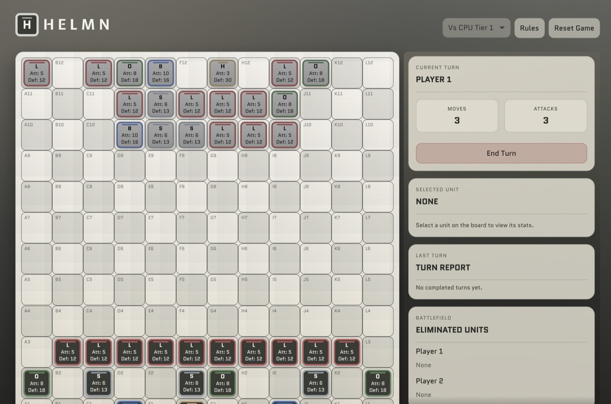
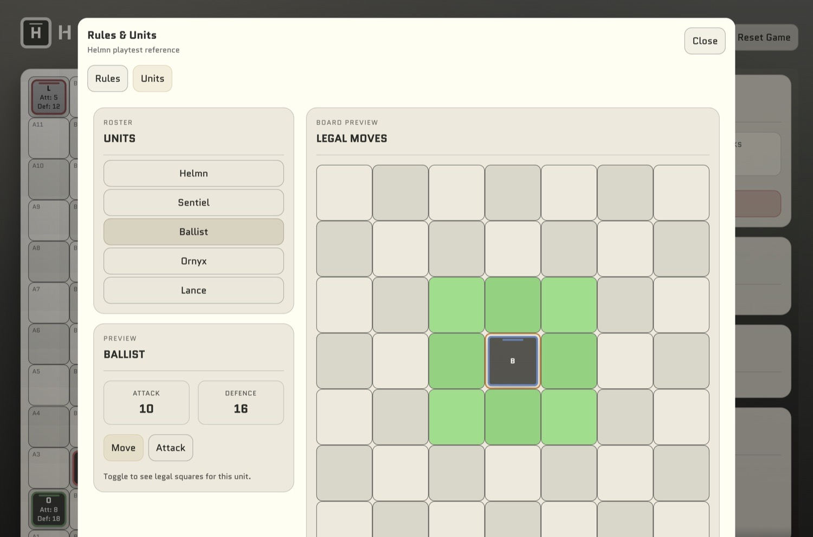
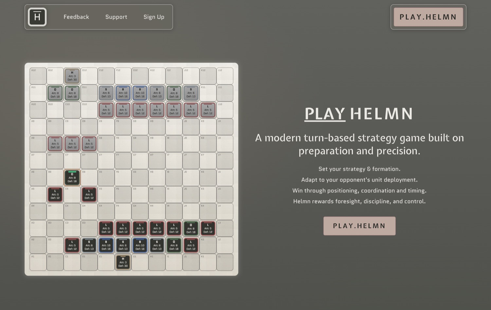

Helmn
A turn-based strategy game about preparation and precision: set your formation, adapt to your opponent's, and win through positioning and timing.

- Built with
- React, TypeScript, Vite, Cloudflare; WordPress (project site)
- Modes
- Vs computer (3 tiers), pass and play
- Origin
- A cardboard and coins prototype
- Status
- Playable beta, v0.4.0
- My role
- Designed and built the game and its site
The idea
A chess-like game with attack and defence
One Christmas, while The Queen’s Gambit was everywhere, I played a lot of chess with my family and enjoyed trying different variations of it. I wanted to see whether I could come up with a chess-like game of my own, with a more modern attack and defence feel, and build the units, their moves and the balance myself.
In Helmn you do not just react. Before play begins you deploy a 19-unit army on a 12×12 board, then each turn you spend a limited number of moves and attacks. The game rewards the player who planned the formation and uses their actions well. It is for people who enjoy strategy games like chess and want something slightly different.
Where it started
From cardboard to the browser
The first version was physical: a cardboard grid, coins for units, and the unit details written on paper. It worked as a game, but I needed more people to play against, and my partner is not a strategy fan.
Once AI tools were good enough, I went through the rules with ChatGPT to iron out how units move and attack and what their attack and defence numbers should be. Then I built the working web game with Codex. That gave me something I could play and test as often as I liked, including against a computer opponent, which is what let me tune the game into what it is now.
How a game works
From setup to the enemy Helmn
- DeployPlace all 19 units inside your first three ranks. The Helmn goes on the back rank.
- Lock inLock the setup. The opponent's formation is set up too.
- Take a turnThree moves and three attacks per turn. Each unit moves once and attacks once at most.
- Wear them downAttacks reduce a unit's Defence. At zero the unit is eliminated.
- WinEliminate the enemy Helmn.
In use
Screenshots



Breakdown
What's inside
| Unit | Count | Attack | Defence |
|---|---|---|---|
| Helmn (protect it) | 1 | 3 | 30 |
| Sentiel | 3 | 6 | 13 |
| Ballist | 2 | 10 | 16 |
| Ornyx | 3 | 8 | 18 |
| Lance | 10 | 5 | 12 |
Three computer opponents
Tier 1 is a basic opponent. Tier 2 is stronger. Tier 3 coordinates attacks, considers formations and adapts locally to how the human plays. A pass-and-play mode covers two people on one device.
A limited action budget
Three moves and three attacks a turn, no unit repeating an action, and Ballists choosing between moving and attacking, force trade-offs every turn.
Rules in the game
A Rules and Units sheet explains the rules and shows each unit's legal squares, so players do not have to leave the game to learn it.
What the design does
Why the rules work this way
Preparation is part of the game
Deployment is a phase of its own with a rule that protects the Helmn, so a match is decided partly before the first attack.
The unit stats make positioning matter
The Ballist hits hardest (10) but cannot move and attack in one turn. The Helmn is tough (30 Defence) but weak at attacking (3). Those trade-offs reward formation over rushing.
Beta means open about what is missing
The project site lists what is available now (Vs AI and Pass and Play) and what is still in development, and invites feedback on balance and clarity.
I designed the core mechanics and balanced the units myself, including the gameplay loop, the interaction logic and how each unit trades attack against defence. I also built the landing site that presents and supports the game, so the branding, layout and content all fit together.
The hard part
Getting the balance right
Balance was the hardest thing. Different attack and defence values, movement types and attack types all had to be played and tested to find a good balance between unit abilities and numbers. Learning how complex it is to design a strategy board game, and how much work goes into balancing pieces and giving units distinct abilities, was the biggest thing the project taught me.
The other problem was rules. Moves and attacks that seemed simple with cardboard and coins turned out to need tightening to hold up in a web app, and early versions had a lot of unit move and attack errors. Tightening the rules until they were robust in code was a large part of the work.
Under the hood
From prototype to engineered platform
The first web version tied the rules to the React app, which made it hard to test gameplay or judge whether an AI change was an improvement. Two releases changed that.
0.3.0: a separate, deterministic engine
I moved from Create React App to Vite and pulled the game rules and AI into a strict TypeScript engine with no dependence on React, the browser, system time or uncontrolled randomness. The same starting state and the same actions now always produce the same match, so games can be replayed from recorded actions and simulated headlessly from a seed.
0.4.0: safe releases and measurable AI
Saved games carry save-schema and rules versions, so compatible saves are migrated and unsupported ones are protected rather than silently overwritten. Diagnostic tooling is kept out of production builds and checked for at build time, and client environment variables are limited to an approved list. The main board, square, setup and play components are now typed too.
An offline AI benchmark
A benchmark runner plays reproducible matches across chosen seeds, AI tiers and starting positions, recording results, decision times, surviving units, health and replay data. Changes to an AI policy can be compared with a baseline under controlled conditions instead of judged by feel.
| Area | Current implementation |
|---|---|
| Application | React 19, Vite 8, TypeScript 5.9 (some JSX remains) |
| Board and animation | Custom HTML and CSS, Web Animations API |
| Game logic and AI | Independent deterministic TypeScript engine, Tiers 1 to 3 |
| Testing | Vitest, React Testing Library, Playwright across Chromium, Firefox, WebKit and mobile Chromium |
| Saves | Versioned local browser persistence |
| Delivery | GitHub Actions, Cloudflare, PostHog analytics |
I chose not to adopt Phaser or PixiJS. For a compact, turn-based board, a custom HTML and CSS renderer does the job without another engine dependency.
Checking it
How I tested it
Playing it, a lot. Friends, family and a small niche online community have given feedback on balance, clarity and pacing, and I used AI to analyse games and moves. Alongside that, the engine is covered by automated unit and browser tests, including animations, reduced-motion preferences and existing saves, and AI changes can be run through the benchmark.
The benchmark is in place, but I have not yet shown a statistically convincing improvement in Tier 3's strength, so I do not claim the AI is optimised. The game has also not been tested by a wide audience, so balance is still a work in progress.
What I left out, for now
There are no accounts or database. Helmn is a local game, against the computer or a friend on the same device, which keeps it light while it is still being tested and refined. Accounts, cloud saves and online play can come once the game has grown into them.
What's next
- Get the game in front of a much wider audience and see how it holds up.
- Use the benchmark to set a baseline, find Tier 3's weaknesses and test improvements on controlled scenarios, with outside strategy testers to add substance.
- Improve onboarding, clarity and polish so new players can learn and return to the game.
- Online multiplayer, with the same rules running on an authoritative server (Cloudflare Workers and Durable Objects are candidates), then accounts, rankings and cloud saves. None of this exists yet.